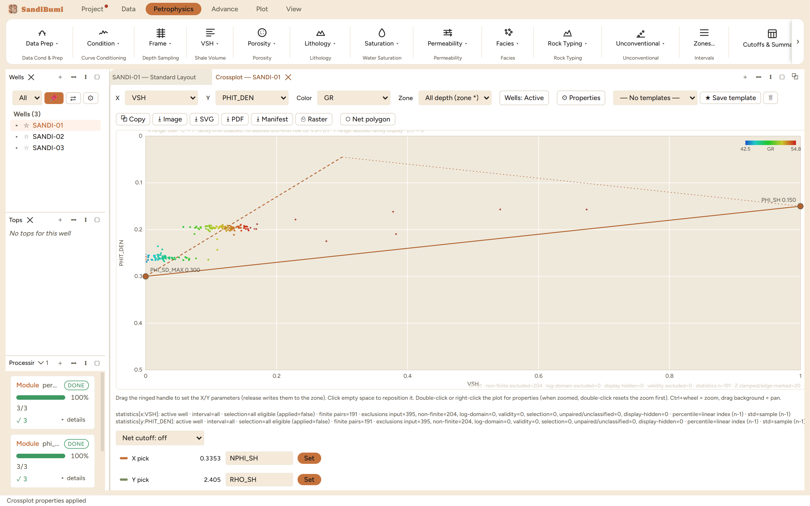
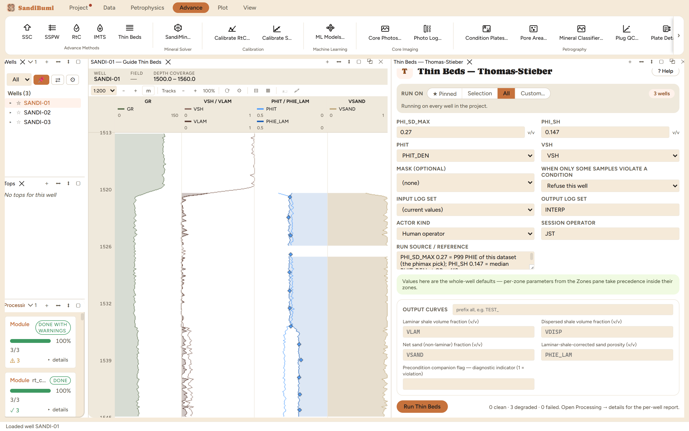

Thomas-Stieber: decomposing bulk shale volume into laminar and dispersed shale from where each sample's (VSH, PHIT) point falls inside the porosity-shale triangle. Laminated sand-shale sequences below log resolution read as one averaged rock; this is the standard construction for un-averaging them, and the doorway to laminar-corrected porosity and the low-resistivity-pay saturation methods.
laminated line: PHIT = PHI_SD_MAX·(1 − VSH) + PHI_SH·VSH dispersed line: PHIT = PHI_SD_MAX − VSH·(1 − PHI_SH) outputs: VLAM, VDISP, VSAND = 1 − VLAM, PHIE_LAM
A sample on the laminated line is sand and shale in series; on the dispersed line, shale filling the sand's pores. Real samples fall between, and the decomposition reads the mixture off the geometry. VLAM reduces net sand; VDISP stays within the sand fraction; PHIE_LAM is the porosity of the net sand after the laminar shale is removed. Structural shale is deliberately not modeled. The whole construction hangs on two endpoints, which is why they refuse to default.
precondition 'PHI_SD_MAX' failed before thin_bed_ts ran: value NaN v/v at sample 0 is not finite. Fix the supplied value or its zone override.
Both corners of the triangle are field statements: the porosity of the cleanest sand this section can deliver, and the porosity of its shale. Neither has a generic value.

0 clean · 3 degraded, and decoding that verdict is the chapter's most useful lesson: degraded means clamped and counted, not broken. Per well, 6, 8 and 2 samples clamped into [0, 0.27] (PHIE_LAM against its own ceiling) and 31, 45 and 30 into [0, 1] (the volume fractions): tail samples whose geometry lands just outside the triangle, exactly what endpoint picks made from percentiles promise. The per-well report counts every one.
Run live: median VLAM 0.0238, VDISP 0.0636, VSAND 0.9762. The split behaves: in the sand population the median VLAM is 0.0214, while the 16 mid-range samples (between the sand and shale GR gates) read 0.365, an order of magnitude more laminar shale exactly where interbedding lives. And PHIE_LAM's sand median of 0.2082 sits above the bulk PHIT's 0.2039: removing the laminae reports the net sand's own, better porosity.
SELECT round(median(value), 4) FROM computed_curves WHERE curve_name = 'VLAM' AND NOT isnan(value)
The endpoint sensitivity: raising PHI_SD_MAX from 0.27 to 0.30 drops the median VLAM to 0. A higher sand corner tilts the laminated line above the cloud, and half the section stops decomposing into laminae at all. Three porosity units on one endpoint is the difference between a laminated story and none, which is why the endpoints are cited, not adjusted until the answer looks right. Restoring 0.27 reproduces 0.0238 exactly.
